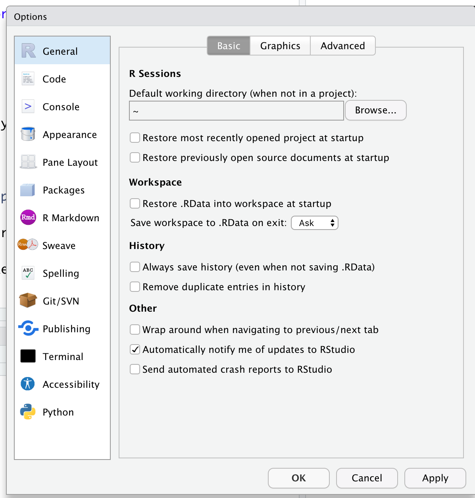

Programming and Data Analysis with R
2021-08-09
Exercise 1 R and RStudio
1.1 Lecture note
1.2 Exercise
Create a new project in the RStudio IDE. Name your project as
sta326.Select a suitable theme for your RStudio IDE’s user interface.
Help: Navigate to Tools > Global Options > Appearance .
Go to
Tools > Global Options > Generaland set the settings as follows:

Change the RStudio pane layout according to your needs.
Help: Tools > Global options > Pane layout and fix it.
Create a new folder called
weeek1inside your main R project.Open a new script file and save it as
week1_exercise.Rinside theweek1folder created in the third step.Go to Exercise 2.2 and write all codes on the R script
week1_exercise.R